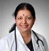

Build a modern Web based Platform that enables telemedicine practice at grass root level for better management of chronic diseases and bringing in transparency in healthcare system in India.
Dr. Sundararajan, is a co-founder of the company, responsible for strategy and business development care Services as Co-Founder with focus on Health care delivery at work place and at home.Sundararajan has a M.S., and Ph.D., in Electrical Engineering with specialization in Computer Applications in “Real Time Enterprise” from The Ohio State University.
In a career spanning over three decades, he has major contributions to his credit in successfully launching several products in the market place covering diverse application such as Industrial and Electro-Medical Instrumentation, Messaging, and IT based Customer facing Enterprise solutions, Manufacturing focused ERP implementation etc.
His original contributions to the IT based Control & Instrumentation solution space have resulted in several recognitions from corporate bodies and academic community. He has held senior positions in several companies including DCM Data products, and Selectica, San Jose.
He is on the Board of Directors of AccelTree Technologies which is into Mobile Enterprise Solutions. As a Lead Mentor with Mentor square he assists start-ups with Product formulations and ‘go-to-market’ strategies.
He has been involved in Pune academic circle activities for over two decades. He is also Adjunct Professor, College of Engineering, Pune and a Senate member. Dr. Sundararajan has presented several papers in National and International seminars.
He was recognized by Department of Small Scale Industries, Government of India in the year 1993 for design of a Tamper proof, 3-phase energy meter.
Pankaj Saxena is a co-founder of the company, responsible for setting up and managing operations of the company.
Pankaj Saxena, is an Electrical Engineer from Indian Institute of Science, Bangalore and has over three decadesof industry experience in product development, application development and profit center management. His industry experience spans from Industrial Control systems to Messaging technology, Storage Software to Interactive Selling Solutions for large enterprises.
Since mid-nineties, Pankaj has assumed leadership roles in Indian as well as large multinational companies. In early nineties, he set up and managed complete operations of one of country’s first X-400 based Messaging service for Data pro. In early 2000, he joined Selectica Inc, responsible for building Enterprise Applications for selling complex configurable products and services for large clients in Asia pacific region. In 2004, he joined IBM to build Storage Software lab in India for developing Storage Virtualization solutions.
Pankaj co-founded Ayushman Pvt. Ltd., a company committed to bring telemedicine practice at grass root level in India. He is currently engaged in developing a Platform for Healthcare Service Providers to bring benefits of advancements in IT and Communication technologies to Consumers. The Platform is expected to improve medical record keeping for the patients and enable Video consultation with their Doctors without constraints of time,distance or location.
Dr. Geeta Sundar is a thought leader on ‘Healthy Ageing’ and ‘Connected Health’ paradigms. She conducts corporate wellness programs to spread the message of Lifestyle changes in Preventive health.
She also writes on Wellness and Health in major newspapers and periodicals and is a frequent contributor to the Times Wellness section in 'Times of India’ besides being a content provider for MSN India. She has authored several books on Health. Her 'Health after Forty’ has been on the best seller list of Macmillan.
Since mid-nineties, Pankaj has assumed leadership roles in Indian as well as large multinational companies. In early nineties, he set up and managed complete operations of one of country’s first X-400 based Messaging service for Data pro. In early 2000, he joined Selectica Inc, responsible for building Enterprise Applications for selling complex configurable products and services for large clients in Asia pacific region. In 2004, he joined IBM to build Storage Software lab in India for developing Storage Virtualization solutions.
She served as senior resident medical officer for over six years at National Institute of Banking Management Pune, where she focused on preventive Health care and Lifestyle management for senior Bank professionals. This resulted in her acquiring deepknowledge of genetic disposition and life style profiles of people from across India. She was able to achieve impressive reventive results, and this laid the foundation to her interest in the forty plus age group.
Her association for over three decades as an Expert Medical Advisor to Life Insurance and Mediclaim industry has added to er a deep understanding of chronic diseasesand their prevention.
Dr. Geeta Sundar believes in a holistic approach to health and to that end has completed formal courses in Homeopathy and Ayurveda, although she does not practice these sciences. She has also completed a course in Medico Legal law.
Dr.Geeta Sundar completed her M.B.B.S. and M.D. (Internal Medicine) from Netaji Subhash Chandra Bose medical college Jabalpur in 1979.
After graduation, she joined Dr. BL Kapoor memorial hospital in Delhi and served asan honorary there for several years.
From 1992 she has been practicing internal medicine consultation at her own clinic at Bibvewadi Pune. Her areas of proficiency are Chronic Disease Management, especially related to Cardiology and Diabetes. She is a member of ---IMA, API and CSI.
In her spare time she writes Crime fiction, and her book ‘The Premier Murder League’ set in IPL background has been published by Penguin. She is also the winner of MSN-Random House short story competition in 2012.
Dr.Geeta Sundar's long and distinguished career in Health Care and Chronic Disease Management will be the focus area for India Online Health and is expected to set the direction for India online Health offerings.
Dr. Sanjeev S. Gokhale is on the Board of the advisors is a Consulting Orthopedic Surgeon. He established his hospital in Pune over 30 years back. He is on the panel of Deenanath Mangeshkar hospital, Poona Hospital, Joshi Hospital, Ratna Hospital, and Ruby Hall Clinic. He is on the panel of university of Pune’s committee for longevity.
Dr. Gokhale graduated from Mumbai with M.S. (ORTH), D.ORTH in 1982. He has presented several prize winning papers in national and international seminars: Arthroscopy- early results of first one hundred cases presented to Indian Medical Association, High Tibial Osteotomy yearly workshop of IMA, High.
Tibial Osteotomy paper read at International Federation of Ageing Global Conference in Durban, South Africa in 1997.
He has authored several books in Marathi: Kambardukhi (relating to backache) and Gudaghedukhi (relating to knee problems). More than 100,000 copies of these books have been sold. Besides he has written numerous articles in newspapers about common orthopedic problems and given talks on TV.He established Laxmi-Raghunath a Charitable foundation in the memory of his grandparents.
Dr. Neela Desai is on the Board of the advisors is a reputed senior Gynecologist & Obstetrician practicing in the city of Pune for the past 30 years. She finished her MBBS and MS (Ob/Gyn) with distinction from MGM Medical College/MY Hospital, a premier teaching hospital in the city of Indore.
She then proceeded to go to UK in 1977 after obtaining full registration with General Medical Council UK. She gained vast experience in modern practice & techniques in Ob/Gyn for four years. She attended in various workshops & seminars of Royal College of London. She completed her DRCOG from Royal College of Obstetrics & Gynecologists in 1979.
Upon her return to India 1982 settled in Pune, an educational hub of India. She has been practicing Ob/Gyn in her own clinic in Vijayanagar Pune since then. She is a Consultant Gynecologist & Obstetrician at Poona Hospital & Research center, a post graduate teaching institute.
She has been practicing Gynec Endoscopic surgeries since 1997. She has attended many workshops & symposia including AAGL at San Francisco in 2004. She undertook an advanced training course at Tagesclinik Hamburg Germany, in endoscopic surgery. Recently she presented 2 papers in FIGO World Congress 2012 in Rome.
She has performed large number of Endoscopic surgeries such as, Lap Hysterectomy, Myomectomy, for Endometriosis, operative hysteroscopy like septum resection, submucous myoma resection.
Dr. Neela Desai is a devoted Obstetrician and is renowned for her work with successful management of challenging high risk pregnancies.
Dr. Gaurov Dayal is on the Board of the advisors of the company and provides his expert advice on matters relating to medical practice management.
Dr. Gaurov Dayal serves as Senior Vice President and Chief Medical Officer of Adventist HealthCare. Adventist HealthCare operates five hospitals, six nursing centers, several home care companies, and affiliated health care services. Based in Rockville, Maryland, Adventist HealthCare is one of the largest private employers in that region, employing more than 7,800 people and caring for nearly half a million patients each year.
Dr. Dayal was appointed to his current role Adventist HealthCare in 2009. In this role he is responsible for clinical integration strategies for the Adventist HealthCare system. He leads Adventist Medical Group, the company’s medical group practice, health and wellness, and runs their Health Insurance plan. Dr. Dayal also leads the systems outpatient clinical informatics program. In 2010 he launched the ACES program, a program that enables community physicians to implement eClinical Works EMR in their offices. He is also very closely involved in the implementation of Adventist HealthCare's enterprise EMR, Cerner.
Prior to joining Adventist HealthCare, Dr. Dayal was a management consultant with the global strategy consulting firm McKinsey and Company. At McKinsey, he served a variety of clients in the pharmaceutical, biotech and health care industry. His past experience also includes roles in medical informatics, a biotech start up and academic medicine. Dr. Dayal is board certified in Pediatrics. He holds an undergraduate degree from the Johns Hopkins University and an M.D. from Northwestern University. He completed his residency training at Washington University, Saint Louis, USA.
Mission
Build a modern Web based Platform that enables telemedicine practice at grass root level for better management of chronic diseases and bringing in transparency in healthcare system in India.
Dr. Sundararajan
Dr. Sundararajan, is a co-founder of the company, responsible for strategy and business development care Services as Co-Founder with focus on Health care delivery at work place and at home.Sundararajan has a M.S., and Ph.D., in Electrical Engineering with specialization in Computer Applications in “Real Time Enterprise” from The Ohio State University.
In a career spanning over three decades, he has major contributions to his credit in successfully launching several products in the market place covering diverse application such as Industrial and Electro-Medical Instrumentation, Messaging, and IT based Customer facing Enterprise solutions, Manufacturing focused ERP implementation etc.
His original contributions to the IT based Control & Instrumentation solution space have resulted in several recognitions from corporate bodies and academic community. He has held senior positions in several companies including DCM Data products, and Selectica, San Jose. He is on the Board of Directors of AccelTree Technologies which is into Mobile Enterprise Solutions. As a Lead Mentor with Mentor square he assists start-ups with Product formulations and ‘go-to-market’ strategies.
He has been involved in Pune academic circle activities for over two decades. He is also Adjunct Professor, College of Engineering, Pune and a Senate member. Dr. Sundararajan has presented several papers in National and International seminars. He was recognized by Department of Small Scale Industries, Government of India in the year 1993 for design of a Tamper proof, 3-phase energy meter.
Dr. Pankaj Saxena
Pankaj Saxena is a co-founder of the company, responsible for setting up and managing operations of the company.
Pankaj Saxena, is an Electrical Engineer from Indian Institute of Science, Bangalore and has over three decadesof industry experience in product development, application development and profit center management. His industry experience spans from Industrial Control systems to Messaging technology, Storage Software to Interactive Selling Solutions for large enterprises.
Since mid-nineties, Pankaj has assumed leadership roles in Indian as well as large multinational companies. In early nineties, he set up and managed complete operations of one of country’s first X-400 based Messaging service for Data pro. In early 2000, he joined Selectica Inc, responsible for building Enterprise Applications for selling complex configurable products and services for large clients in Asia pacific region. In 2004, he joined IBM to build Storage Software lab in India for developing Storage Virtualization solutions.
Pankaj co-founded Ayushman Pvt. Ltd., a company committed to bring telemedicine practice at grass root level in India. He is currently engaged in developing a Platform for Healthcare Service Providers to bring benefits of advancements in IT and Communication technologies to Consumers. The Platform is expected to improve medical record keeping for the patients and enable Video consultation with their Doctors without constraints of time,distance or location.
Medical Advisory Board
Dr. Geeta Sundar
Dr. Geeta Sundar is a thought leader on ‘Healthy Ageing’ and ‘Connected Health’ paradigms. She conducts corporate wellness programs to spread the message of Lifestyle changes in Preventive health.
She also writes on Wellness and Health in major newspapers and periodicals and is a frequent contributor to the Times Wellness section in 'Times of India’ besides being a content provider for MSN India. She has authored several books on Health. Her 'Health after Forty’ has been on the best seller list of Macmillan.
Since mid-nineties, Pankaj has assumed leadership roles in Indian as well as large multinational companies. In early nineties, he set up and managed complete operations of one of country’s first X-400 based Messaging service for Data pro. In early 2000, he joined Selectica Inc, responsible for building Enterprise Applications for selling complex configurable products and services for large clients in Asia pacific region. In 2004, he joined IBM to build Storage Software lab in India for developing Storage Virtualization solutions.
She served as senior resident medical officer for over six years at National Institute of Banking Management Pune, where she focused on preventive Health care and Lifestyle management for senior Bank professionals. This resulted in her acquiring deepknowledge of genetic disposition and life style profiles of people from across India. She was able to achieve impressive reventive results, and this laid the foundation to her interest in the forty plus age group.
Her association for over three decades as an Expert Medical Advisor to Life Insurance and Mediclaim industry has added to er a deep understanding of chronic diseasesand their prevention.
Dr. Geeta Sundar believes in a holistic approach to health and to that end has completed formal courses in Homeopathy and Ayurveda, although she does not practice these sciences. She has also completed a course in Medico Legal law.
Dr.Geeta Sundar completed her M.B.B.S. and M.D. (Internal Medicine) from Netaji Subhash Chandra Bose medical college Jabalpur in 1979.
After graduation, she joined Dr. BL Kapoor memorial hospital in Delhi and served asan honorary there for several years.
From 1992 she has been practicing internal medicine consultation at her own clinic at Bibvewadi Pune. Her areas of proficiency are Chronic Disease Management, especially related to Cardiology and Diabetes. She is a member of ---IMA, API and CSI.
In her spare time she writes Crime fiction, and her book ‘The Premier Murder League’ set in IPL background has been published by Penguin. She is also the winner of MSN-Random House short story competition in 2012.
Dr.Geeta Sundar's long and distinguished career in Health Care and Chronic Disease Management will be the focus area for India Online Health and is expected to set the direction for India online Health offerings.
Dr. Sanjeev S. Gokhale
Dr. Sanjeev S. Gokhale is on the Board of the advisors is a Consulting Orthopedic Surgeon. He established his hospital in Pune over 30 years back. He is on the panel of Deenanath Mangeshkar hospital, Poona Hospital, Joshi Hospital, Ratna Hospital, and Ruby Hall Clinic. He is on the panel of university of Pune’s committee for longevity.
Dr. Gokhale graduated from Mumbai with M.S. (ORTH), D.ORTH in 1982. He has presented several prize winning papers in national and international seminars: Arthroscopy- early results of first one hundred cases presented to Indian Medical Association, High Tibial Osteotomy yearly workshop of IMA, High.
Tibial Osteotomy paper read at International Federation of Ageing Global Conference in Durban, South Africa in 1997.
He has authored several books in Marathi: Kambardukhi (relating to backache) and Gudaghedukhi (relating to knee problems). More than 100,000 copies of these books have been sold. Besides he has written numerous articles in newspapers about common orthopedic problems and given talks on TV.He established Laxmi-Raghunath a Charitable foundation in the memory of his grandparents.
Dr. Neela Desai
Dr. Neela Desai is on the Board of the advisors is a reputed senior Gynecologist & Obstetrician practicing in the city of Pune for the past 30 years. She finished her MBBS and MS (Ob/Gyn) with distinction from MGM Medical College/MY Hospital, a premier teaching hospital in the city of Indore.
She then proceeded to go to UK in 1977 after obtaining full registration with General Medical Council UK. She gained vast experience in modern practice & techniques in Ob/Gyn for four years. She attended in various workshops & seminars of Royal College of London. She completed her DRCOG from Royal College of Obstetrics & Gynecologists in 1979.
Upon her return to India 1982 settled in Pune, an educational hub of India. She has been practicing Ob/Gyn in her own clinic in Vijayanagar Pune since then. She is a Consultant Gynecologist & Obstetrician at Poona Hospital & Research center, a post graduate teaching institute.
She has been practicing Gynec Endoscopic surgeries since 1997. She has attended many workshops & symposia including AAGL at San Francisco in 2004. She undertook an advanced training course at Tagesclinik Hamburg Germany, in endoscopic surgery. Recently she presented 2 papers in FIGO World Congress 2012 in Rome.
She has performed large number of Endoscopic surgeries such as, Lap Hysterectomy, Myomectomy, for Endometriosis, operative hysteroscopy like septum resection, submucous myoma resection.
Dr. Neela Desai is a devoted Obstetrician and is renowned for her work with successful management of challenging high risk pregnancies.
Dr. Gaurov Dayal
Dr. Gaurov Dayal is on the Board of the advisors of the company and provides his expert advice on matters relating to medical practice management.
Dr. Gaurov Dayal serves as Senior Vice President and Chief Medical Officer of Adventist HealthCare. Adventist HealthCare operates five hospitals, six nursing centers, several home care companies, and affiliated health care services. Based in Rockville, Maryland, Adventist HealthCare is one of the largest private employers in that region, employing more than 7,800 people and caring for nearly half a million patients each year.
Dr. Dayal was appointed to his current role Adventist HealthCare in 2009. In this role he is responsible for clinical integration strategies for the Adventist HealthCare system. He leads Adventist Medical Group, the company’s medical group practice, health and wellness, and runs their Health Insurance plan. Dr. Dayal also leads the systems outpatient clinical informatics program. In 2010 he launched the ACES program, a program that enables community physicians to implement eClinical Works EMR in their offices. He is also very closely involved in the implementation of Adventist HealthCare's enterprise EMR, Cerner.
Prior to joining Adventist HealthCare, Dr. Dayal was a management consultant with the global strategy consulting firm McKinsey and Company. At McKinsey, he served a variety of clients in the pharmaceutical, biotech and health care industry. His past experience also includes roles in medical informatics, a biotech start up and academic medicine. Dr. Dayal is board certified in Pediatrics. He holds an undergraduate degree from the Johns Hopkins University and an M.D. from Northwestern University. He completed his residency training at Washington University, Saint Louis, USA.